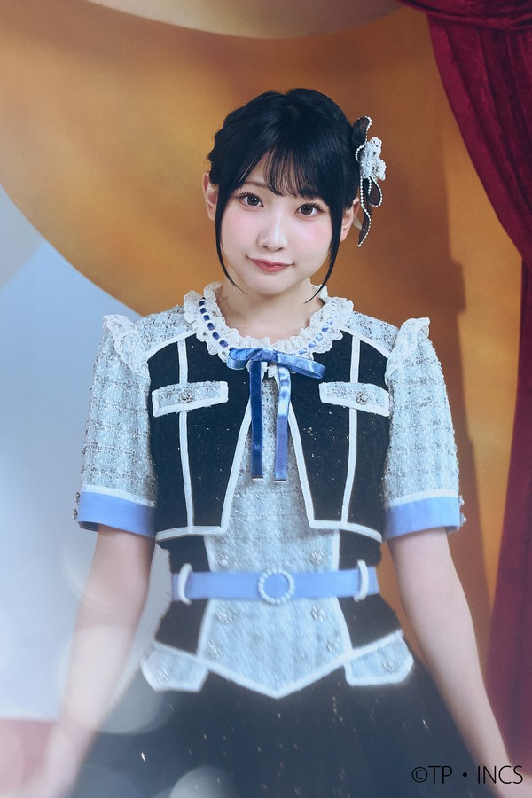

Sorter for Takane no Nadeshiko and Karen na Ivory members. Pick your groups, and hit the Start button.
Certain options have details that you can hover to read.
Click on the member you like better from the two, or tie them if you like them equally or don't know them.
Depending on how many groups you pick, you'll get up to 90 picks, so set aside a cup of tea for this.
Keyboard controls during sorting: H/LeftArrow (pick left) J/DownArrow (undo) K/UpArrow (tie) L/RightArrow (pick right) S (save progress).
Before sorting: S/Enter (start sorting) L (load progress).
1/2/3 always correspond to the first/second/third buttons.
Fan-made sorter. All member images belong to their respective owners. Based on charasort by Frelia (@execfera).
September 30th, 2026 - Sorter created.